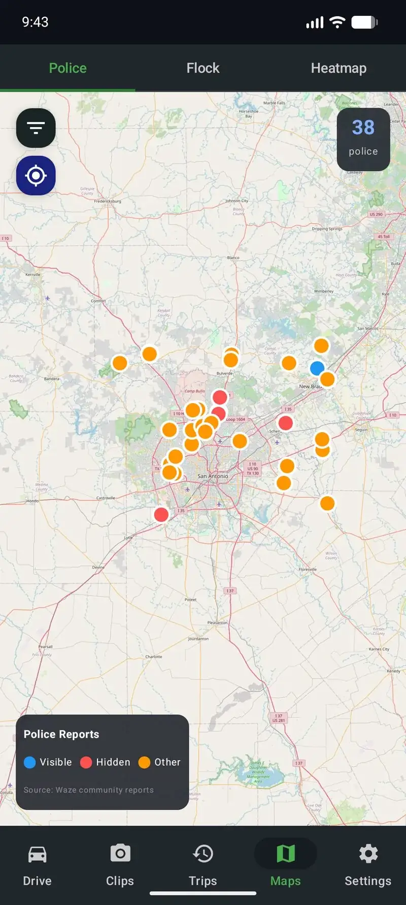

Every Feature in DriveSight — And the Phone Tech That Makes It Possible
Affiliate disclosure: Some links on this page are Amazon affiliate links. As an Amazon Associate, we earn from qualifying purchases at no extra cost to you.
I built DriveSight because I got tired of paying for hardware that could not keep up with what my phone could already do. The phone in your pocket right now has a better camera, more processing power, free cloud storage, GPS, cellular data, and an app ecosystem that updates weekly. A $250 dashcam bolted to your windshield has a fixed-focus lens and a firmware update from 2023.
Here is a full breakdown of what DriveSight does and, more importantly, the specific phone hardware that makes each feature possible. Because once you understand why these features work on a phone, you will never look at a dedicated dashcam the same way again.

DriveSight alerting the driver to a speed enforcement zone ahead
Recording and Storage
Continuous Loop Recording
DriveSight records continuously in segments while you drive. When storage gets full, the oldest unprotected clips are automatically deleted to make room for new ones. You never have to think about managing files. Video storage options include internal storage, SD card (on supported devices), and automatic Google Drive backup — giving you more flexibility than any hardware dashcam in this class.
Why this works on a phone: Modern phones use UFS 3.1 or UFS 4.0 storage that writes data faster than any microSD card in a hardware dashcam. A Class 10 microSD tops out around 10MB/s write speed. Your phone's internal storage writes at 1,000-2,000MB/s. That means zero dropped frames, even at high bitrates. And you are not limited to a 128GB SD card. Most phones have 64-256GB of storage, and you can add more with an SD card on top of that.
1080p and 4K Video Quality
Record at 1080p for standard quality or 4K if your phone supports it. The video quality from a phone camera in 2026 is genuinely better than most dedicated dashcam sensors, even expensive ones.
Why this works on a phone: Phone camera sensors have gotten ridiculously good. The main sensor on a 4-year-old Pixel 4a is a 12.2MP Sony IMX363 with 1.4 micron pixels. For comparison, the Sony STARVIS sensor in a $300 Viofo A139 Pro has 2.9 micron pixels on a smaller sensor. The phone wins on dynamic range, color accuracy, and autofocus speed. Add computational HDR that hardware dashcams simply cannot do, and the phone produces footage that looks better in almost every lighting condition. Night time, tunnels, sunrise glare, parking garages. Phones handle all of it because their image signal processors have been optimized by billions of dollars of smartphone R&D.
Safety and Detection
Crash and Impact Detection
If the phone detects a sudden impact through its accelerometer and gyroscope, the current recording segment is immediately locked so it cannot be overwritten by loop recording. This happens automatically with zero driver input.
Why this works on a phone: Your phone has a 6-axis IMU (inertial measurement unit) with an accelerometer and gyroscope that samples at 200-400Hz. That is the same sensor refresh rate used in automotive crash detection systems. The phone can detect the difference between a speed bump and an actual collision based on the force profile and duration of the impact event. A budget dashcam's accelerometer samples at maybe 50Hz with less sensitivity.
AI Object Detection (YOLOv8)
Real-time identification of vehicles, pedestrians, cyclists, and other objects on the road. Bounding boxes are drawn on the live preview and burned into saved video clips so you can see exactly what the AI detected at every moment.
Why this works on a phone: This is the feature that blows hardware dashcams out of the water. Your phone has a dedicated neural processing unit (NPU) or a GPU capable of running machine learning inference. DriveSight runs a YOLOv8 Nano model through TensorFlow Lite, processing frames in real-time entirely on-device. No cloud, no latency, no internet needed. A Snapdragon 700-series chip handles this at 15-20 frames per second. A hardware dashcam would need a custom AI accelerator chip that does not exist in any consumer dashcam under $500. Your phone already has one.

YOLOv8 AI detection running in real-time, identifying vehicles on the road
336,000+ Camera and Police Alerts
Speed cameras, red light cameras, Flock Safety ALPR cameras, and community-reported police speed traps. Audio and visual alerts warn you as you approach enforcement locations. A full map view shows every known camera in your area.
Why this works on a phone: GPS plus a data connection plus a display. That is all it takes, and your phone has all three. The app maintains a database of over 336,000 camera locations and cross-references your GPS position against it in real-time. When you are within range of a camera, you get an alert. A hardware dashcam cannot do this because it does not have cellular data to download the database or the processing power to run real-time geofencing against 336,000 coordinates. Some hardware dashcams partner with apps on your phone for alerts, which means you need your phone anyway. At that point, just use the phone as the dashcam.

Map view with over 336,000 camera and police alert locations
Parking and Surveillance
Parking Mode with Motion Detection
When you park, switch to parking mode. The screen turns off, and the app watches for motion through the camera. When someone walks past your car, bumps it, or tries to break in, a video clip is saved automatically. The phone flashlight can flash as a visible deterrent.
Why this works on a phone: Android foreground services with partial wake locks keep the CPU alive at minimal power while the screen stays off. The camera runs a lightweight motion detection algorithm that compares frame differences without full video encoding, only spinning up the recorder when actual motion is detected. This consumes a fraction of the power that continuous recording uses. A phone with 4,000mAh battery runs parking mode for 4-6 hours. A USB battery bank extends that to 12-24 hours. The total cost of a phone plus battery bank is still less than the hardwire kit most hardware dashcams need for parking mode.
Automatic Cloud Backup to Google Drive
Crash clips, parking mode events, and manually saved footage are automatically uploaded to your Google Drive. If the phone is destroyed or stolen, your evidence is already in the cloud. Unlike standalone cloud backup apps for mobile that only sync on demand, DriveSight uploads footage automatically the moment a clip is saved.
Why this works on a phone: Your phone has WiFi and cellular connectivity built in. When an important clip is saved, the app queues it for upload to Google Drive using the Drive API. If you are on WiFi (like when you park at home), clips sync in the background. If you have cellular data, crash clips upload immediately after an incident. Every Google account comes with 15GB of free storage. Hardware dashcams that offer cloud backup charge $10-15 per month for their proprietary cloud service and require a separate SIM card or WiFi dongle. Your phone does it for free with infrastructure you already pay for.
Remote Live Viewer
Watch your dashcam's live feed from anywhere in the world through a web browser. The connection is peer-to-peer using WebRTC, so there is no relay server and no monthly fee.
Why this works on a phone: WebRTC was designed for real-time video communication between devices. Your phone already supports it natively because it is the same technology that powers video calls. DriveSight uses Firestore for signaling (establishing the connection) and then streams video directly from the dashcam phone to your browser. The video is bandwidth-limited to 500kbps at 480x360 resolution to work on cellular data without burning through your plan. No hardware dashcam offers free peer-to-peer streaming. The ones that have remote viewing charge monthly for a cloud relay service.
Tracking and Data
GPS Speedometer and Trip Tracking
A live speedometer shows your current speed on the recording screen. Every trip is logged with route maps, distance, duration, max speed, and average speed. Speed data is overlaid on saved video clips so you have proof of how fast you were going at any point.
Why this works on a phone: Your phone has a multi-constellation GNSS receiver (GPS + GLONASS + Galileo + BeiDou) that provides 1-3 meter accuracy with sub-second updates. Most hardware dashcams have a basic GPS-only receiver that takes 30-60 seconds to get a fix and provides less accurate speed data. The phone's GPS locks in seconds and maintains accuracy even in urban canyons because it uses multiple satellite systems simultaneously. The speed overlay on recorded videos provides timestamped evidence of your driving speed that holds up for insurance claims.
Dual Camera Recording
Record from the front and rear cameras at the same time. The rear camera faces the road while the front-facing camera records the cabin interior. Essential for rideshare and delivery drivers — DriveSight works as a delivery driver safety app and covers delivery compliance documentation requirements with GPS-stamped trip logs and dual-angle video.
Why this works on a phone: Android's CameraX API supports concurrent front and rear camera streams on most phones from 2020 onward. The phone's image signal processor handles encoding both streams simultaneously using hardware acceleration. A dual-camera hardware dashcam setup costs $300+ for the main unit plus a secondary camera with wiring. Your phone has both cameras already built in, 6 inches apart, with zero wiring needed.
The Hardware Advantage You Already Own
Here is the part that really changed my perspective on dashcams. I started adding up what is actually inside a modern smartphone versus what is inside a $250 hardware dashcam, and the comparison is not even close.
What is inside your phone: A multi-core CPU, a GPU, a neural processing unit, 4-12GB of RAM, 64-256GB of flash storage, a 12-108MP camera sensor with OIS, computational HDR, a 6-axis IMU, multi-constellation GPS, WiFi 6, Bluetooth 5, cellular data, a 4,000-5,000mAh battery, a high-resolution display, a speaker, a flashlight, and an operating system that receives monthly security updates. Total value: $200-1,000 when new. Current value sitting in your drawer: $0.
What is inside a $250 hardware dashcam: A basic ARM processor, 256MB-1GB of RAM, no internal storage (requires SD card sold separately), a 2-5MP sensor, a fixed-focus lens, a basic accelerometer, optional GPS (sometimes sold separately), no connectivity, a supercapacitor or small battery, a 2-inch screen, and firmware that was last updated in 2024. Total value: $250.
The phone wins in every single hardware category except heat tolerance. And even that gap is closing as phone manufacturers improve thermal management with vapor chambers and graphene heat spreaders.
You are not buying a dashcam when you use DriveSight. You are unlocking the dashcam that was already inside your phone the entire time.
Dashcam Heat Blocking Film
$5.99Frequently Asked Questions
What features does DriveSight include for free?
The free version includes continuous loop recording, parking mode with motion detection, crash and impact detection, GPS speedometer, trip history with route maps, Google Drive cloud backup, dual camera recording, and auto-start on charger. No account or sign-up required.
How does AI object detection work on a phone dashcam?
DriveSight runs a YOLOv8 machine learning model directly on your phone using TensorFlow Lite. The phone's GPU or neural processing unit handles inference in real-time, identifying vehicles, pedestrians, and cyclists without any internet connection. This is the same class of technology used in autonomous vehicle research, running locally on hardware you already own.
Does DriveSight work as a parking camera?
Yes. Parking mode turns the screen off, monitors for motion through the camera, and saves video clips when activity is detected. It can flash the phone's flashlight as a deterrent and automatically upload parking clips to Google Drive for anti-theft protection. A phone on a USB battery bank provides hours of parking surveillance without any hardwire installation.
How many speed cameras does DriveSight track?
DriveSight Pro tracks over 336,000 camera locations including speed cameras, red light cameras, Flock Safety ALPR cameras, and community-reported police speed traps. Alerts appear on screen and play audio warnings as you approach enforcement locations. The database is updated regularly through app updates.
Try it yourself
DriveSight is free on Google Play. No account needed, no credit card, no trial period. Install it, mount your phone, and you have a dashcam with more features than anything you can buy off Amazon. Seriously.
Download DriveSight Free